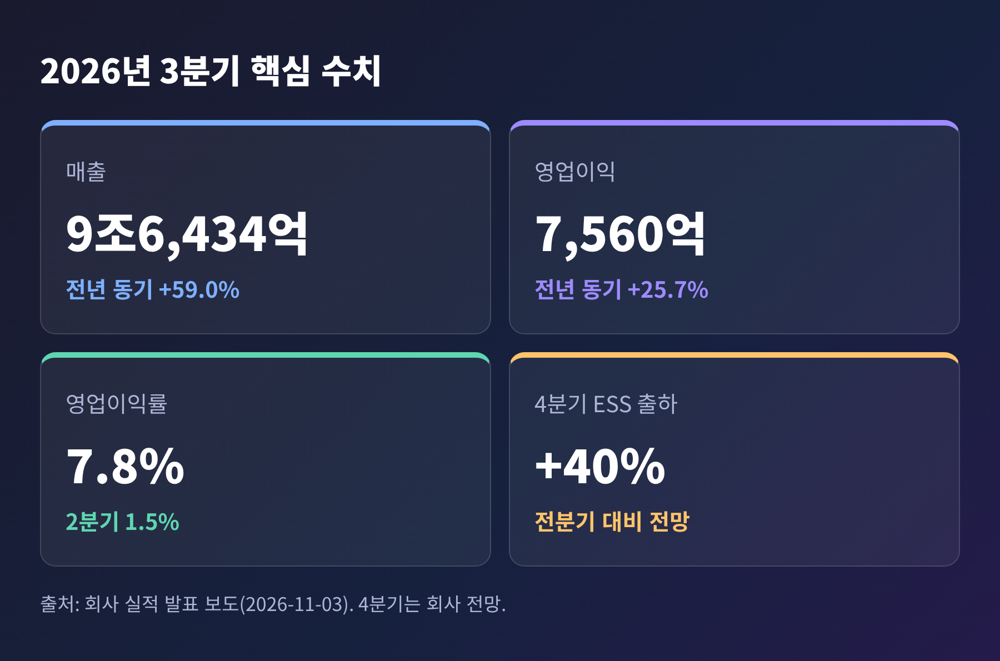
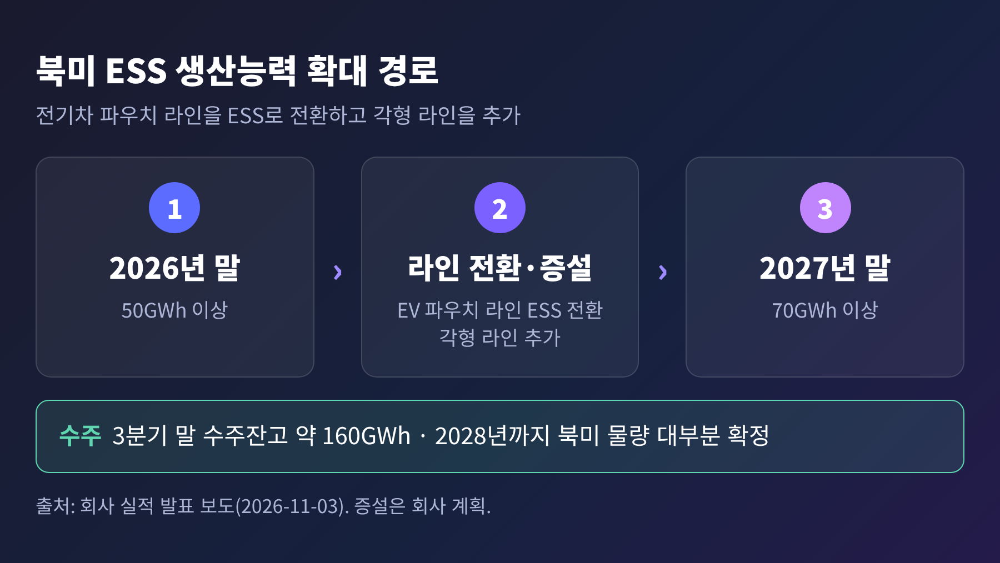
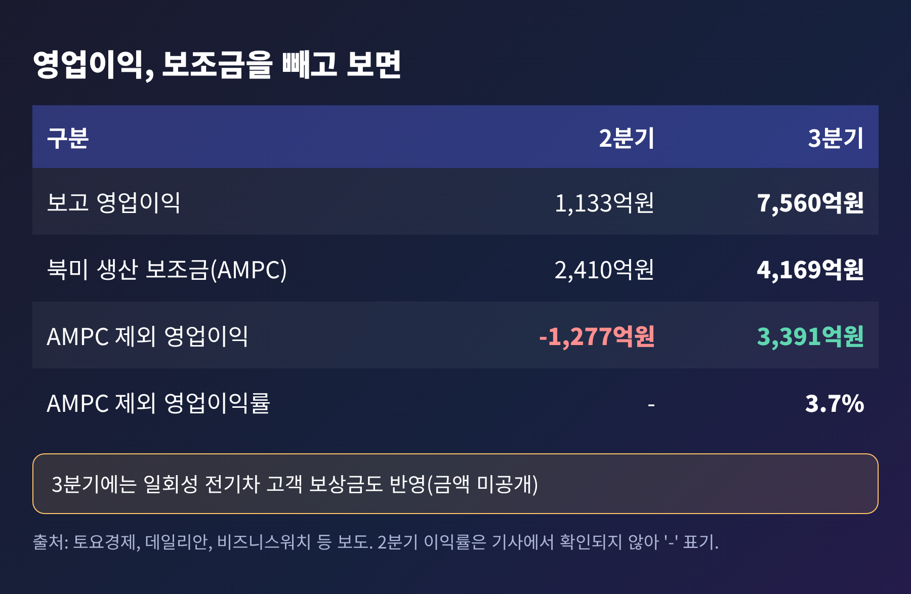
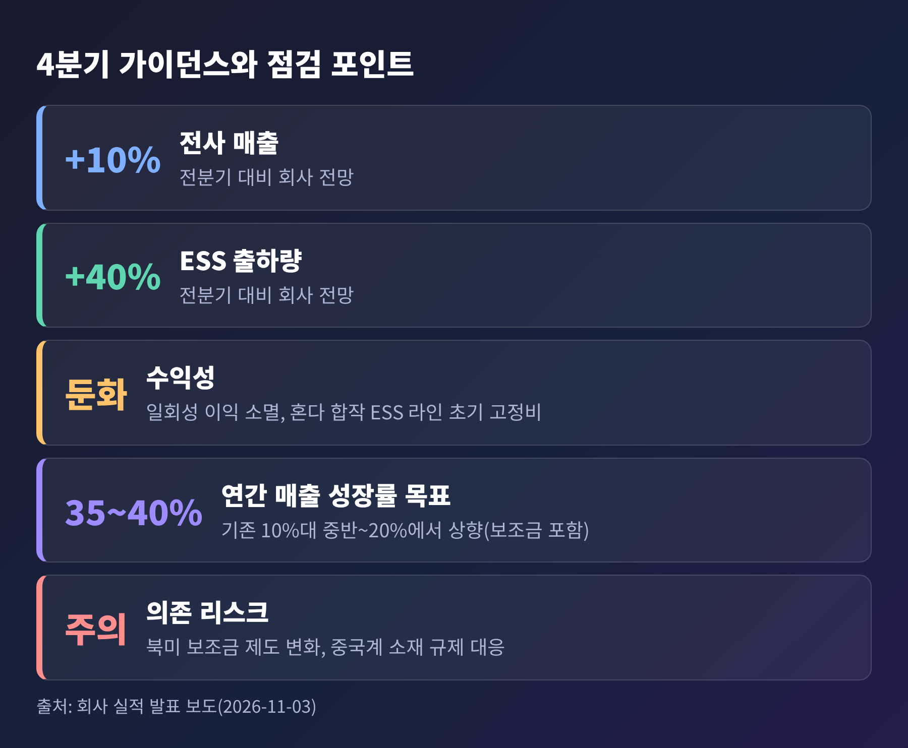
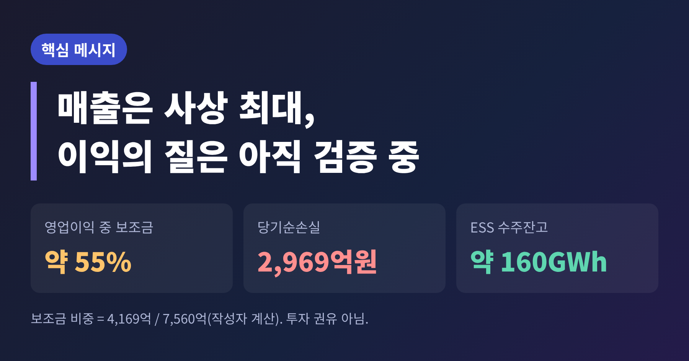

LG에너지솔루션 3분기 영업이익 7560억, 보조금 빼면 3391억원

이번 글에서는 11월 3일 공개된 LG에너지솔루션의 3분기 확정 실적을 정리해 보겠습니다. 매출은 분기 기준 역대 최대인 9조6,434억원, 영업이익은 7,560억원이었습니다. 다만 영업이익의 절반 이상이 미국 보조금이고, 당기순손실은 2,969억원으로 적자 전환했습니다. 숫자 하나로 평가하기 어려운 분기였다는 뜻입니다.
본 글은 공개된 보도를 정리한 정보성 해설이며, 특정 종목에 대한 투자 권유가 아닙니다.
■ 무슨 일이 있었나: 매출 59% 증가, 영업이익 7,560억원
LG에너지솔루션은 11월 3일 3분기 연결 실적과 컨퍼런스콜 내용을 공개했습니다. 영업이익 7,560억원은 10월 8일 잠정치로 먼저 알려진 수치이고, 이번에 세부 내용이 확정된 것입니다.
- 매출: 9조6,434억원. 전년 동기 대비 59.0%, 전분기 대비 27.6% 늘었습니다.
- 영업이익: 7,560억원. 전년 동기(6,013억원) 대비 25.7% 늘었고, 전분기(1,133억원)와 비교하면 567.3% 늘었습니다.
- 영업이익률: 7.8%. 2분기 1.5%에서 올랐습니다.

2분기까지만 해도 분위기는 달랐습니다. 상반기 누적 영업손실이 945억원이었고, 2분기 영업이익 1,133억원은 시장 컨센서스 2,034억원에도 못 미쳤습니다. 한 분기 만에 흐름이 바뀐 셈입니다.
■ 왜 올랐나: ESS가 매출의 30%를 넘었다
개선의 중심에는 ESS가 있습니다. ESS는 전기를 저장해 두었다가 필요할 때 내보내는 에너지저장장치입니다. 3분기 매출에서 ESS가 차지한 비중은 30%를 조금 넘는 수준으로 보도됐습니다. 위키트리는 ESS 출하량이 전분기보다 60% 이상 늘었다고 전했습니다. 이 수치는 이 매체 한 곳의 보도입니다.
이창실 CFO(부사장)는 컨퍼런스콜에서 폴란드 공장 가동률 개선, 원통형 제품 공급 지속, ESS 신규 양산 거점의 생산성 개선을 이유로 꼽았습니다. 북미 GM 합작공장이 재가동되고 현대차그룹 합작공장이 가동을 시작한 것도 물량에 보탬이 됐습니다.
수요 쪽 신호도 뚜렷합니다.
- ESS 수주잔고는 3분기 말 약 160GWh입니다.
- 북미 ESS 물량은 현재 계획된 생산능력 기준으로 2028년까지 대부분 공급처가 정해졌습니다.
- 정재욱 ESS전지기획관리담당은 고객의 예상 수요가 공급 가능한 생산능력을 넘어서고 있다고 설명했습니다.
- 빅테크 기업과 BESS(배터리 에너지저장시스템) 직접 공급 계약을 처음 맺었고, 9월에는 엔비디아의 'DSX Ready BESS 파트너'로 선정됐습니다. 국내 배터리 기업으로는 유일하다고 보도됐습니다.
계약 상대와 규모는 공개되지 않았습니다. 이 부분은 확인되지 않은 채로 남아 있습니다.

■ 쟁점 하나: 보조금을 빼면 영업이익은 3,391억원
이번 실적을 읽을 때 가장 먼저 봐야 할 숫자는 보조금입니다. 3분기 영업이익에는 미국 인플레이션감축법(IRA)에 따른 첨단제조생산 세액공제(AMPC) 4,169억원이 들어 있습니다. 이를 빼면 영업이익은 3,391억원, 영업이익률은 3.7%입니다. 보조금 비중은 영업이익의 약 55%에 해당합니다.
예전에는 보조금을 빼면 적자였습니다. 지금은 빼도 흑자입니다. 2분기에는 AMPC를 제외한 영업손실이 1,277억원이었으니, 전분기보다 4,668억원 개선된 것입니다. 긍정적인 변화임은 분명합니다.

다만 한계도 있습니다. 3분기에는 일부 전기차 고객사 보상금이 이익에 반영됐고, 회사는 4분기에는 이 일회성 요인이 사라진다고 밝혔습니다. 금액은 공개되지 않았습니다. 토요경제는 증권가 추정치로 3,000억~3,500억원을 소개했는데, 이 역시 이 매체 한 곳의 보도이며 회사가 확인한 숫자가 아닙니다. 따라서 보조금 제외 이익 3,391억원 가운데 얼마가 반복 가능한 이익인지는 지금으로서는 단정하기 어렵습니다.
■ 쟁점 둘: 영업이익은 늘었는데 순손실은 2,969억원
영업이익이 늘었는데 왜 적자인지 궁금하실 수 있습니다. 당기순손실은 2,969억원, 세전 손실은 2,312억원입니다. 전년 동기에는 순이익 5,361억원을 냈으니 흑자에서 적자로 돌아선 것입니다.
영업이익과 세전 손익의 차이는 약 9,872억원입니다. 보도들은 이 차이의 원인이 공시에 명시되지 않았다고 전합니다. 이 글에서도 원인을 추정하지 않겠습니다. 확인되지 않은 항목입니다.
누적 기준으로 보면 숫자는 더 차분해집니다. 1~3분기 매출은 23조7,586억원으로 26.1% 늘었지만, 영업이익은 6,616억원으로 54.9% 줄었고 당기순손실은 1조5,696억원입니다. 한 분기의 반등이 연간 흐름을 뒤집지는 못했습니다.
재무 부담도 따로 봐야 합니다. Korea Times는 3분기 부채비율이 171%로 1년 전 125%보다 높아졌다고 보도했습니다. 이 수치는 해당 매체 단독입니다. 회사는 설비투자를 올해 전년 대비 40% 이상 줄이고 부채 상환을 우선하겠다는 방침입니다.
■ 배경과 전망: 4분기는 매출 늘고 수익성은 숨 고르기
회사가 내놓은 4분기 전망은 이렇습니다.
- 전사 매출은 전분기 대비 약 10% 증가
- ESS 출하량은 전분기 대비 약 40% 증가
- 수익성은 일회성 이익 소멸과 혼다 합작법인 ESS 라인의 초기 고정비로 일부 둔화
연간 매출 성장률 목표는 기존 10%대 중반~20%에서 35~40%로 상향했습니다. 북미 생산보조금을 포함한 기준입니다. 연간 영업이익률은 한 자릿수 중반대 목표를 유지했습니다.

정책 환경은 양날의 검입니다. 미국은 8월 행정명령으로 BESS와 인버터 같은 전력망 장비의 공급망 안보 기준을 강화했습니다. 중국계 소재를 쓰지 않는 비PFE(금지외국기관 비해당) 공급망이 중요해졌고, 회사는 양극재 조달처를 여러 곳으로 늘리고 캐나다·미국산 리튬 장기 공급 계약도 맺었습니다. 북미 현지 생산 능력이 강점이 되는 구조이지만, 보조금 제도가 바뀌면 실적이 흔들릴 수 있다는 점은 그대로입니다.
전기차 쪽에서도 준비는 이어지고 있습니다. 46시리즈 원통형 배터리는 기존 완성차 업체와 신생 전기차 업체에서 확보한 물량이 440GWh를 넘는다고 합니다. 노인학 소형전지기획관리담당은 가까운 시일 안에 의미 있는 규모의 수주 성과가 있을 것이라고 내다봤습니다. 소듐이온 배터리는 올해 ESS용 샘플 생산을 시작하고 내년 북미 고객사에 테스트 제품을 보낼 계획이며, 탭리스 LFP 2170 배터리는 내년 상반기 양산이 예고됐습니다. 이 일정들은 모두 회사 계획이어서 실제 진행은 지켜봐야 합니다.
시장의 눈높이도 참고할 만합니다. 7월 보도에서 신한투자증권은 하반기 ESS 매출이 상반기보다 46% 늘 것으로 봤습니다. 3분기에 전분기 대비 매출이 27.6% 늘었으니 방향은 맞아 가고 있지만, 4분기 수익성 둔화 가능성을 회사가 먼저 언급했다는 점은 기대를 조절하게 만드는 대목입니다. 유럽에서는 9월 발표된 수정 권고안으로 현지 생산으로 인정되는 범위가 줄었다는 보도도 있습니다. 이 내용은 한 매체의 보도여서 추가 확인이 필요합니다.
앞으로 확인할 지점은 세 가지입니다.
- 보조금 제외 영업이익이 일회성 없이도 유지되는지
- 영업이익과 세전 손익 사이의 큰 격차가 어떻게 설명되는지
- 2027년 말 북미 ESS 70GWh 증설이 일정대로 진행되는지

정리하면 이렇습니다.
"매출은 사상 최대, 이익의 질은 아직 검증 중."
ESS 수요는 분명히 실적을 끌어올렸습니다. 그러나 보조금과 일회성 보상금을 걷어낸 뒤에도 남는 이익이 얼마인지는 4분기 이후에야 보일 것입니다. 이 숫자를 얼마나 믿어도 되느냐고 물으신다면, 한 분기가 아니라 몇 분기를 이어서 보시라고 답하겠습니다.
※ 이 글은 공개 보도를 바탕으로 한 정보 제공 목적이며 투자 권유가 아닙니다. 모든 수치는 2026년 11월 3일 보도 기준입니다.